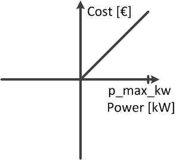
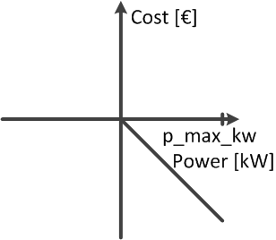

Optimisation problem¶
The equation describes the basic formulation of the optimal power flow (OPF) problem. The pandapower optimal power flow can be constrained by either AC or DC loadflow equations. The branch constraints represent the maximum apparent power loading of transformers and the maximum line current loadings. The bus constraints can contain maximum and minimum voltage magnitude and angle. For the external grid, generators, loads, DC lines and static generators, the maximum and minimum active resp. reactive power can be considered as operational constraints for the optimal power flow. The constraints are defined element wise in the respective element tables.
Generator flexibilities / Operational power constraints
The active and reactive power generation of generators, loads, dc lines and static generators can be defined as a flexibility for the OPF.
Constraint |
Defined in |
\(P_{min,i} \leq P_{g} \leq P_{max,g},\ g \ \epsilon \ gen\) |
net.gen.min_p_mw / net.gen.max_p_mw |
\(Q_{min,g} \leq Q_{g} \leq Q_{max,g},\ g \ \epsilon \ gen\) |
net.gen.min_q_mvar / net.gen.max_q_mvar |
\(P_{min,sg} \leq P_{sg} \leq P_{max,sg},\ sg \ \epsilon \ sgen\) |
net.sgen.min_p_mw / net.sgen.max_p_mw |
\(Q_{min,sg} \leq Q_{sg} \leq Q_{max,sg},\ sg \ \epsilon \ sgen\) |
net.sgen.min_q_mvar / net.sgen.max_q_mvar |
\(P_{max,g},\ g \ \epsilon \ dcline\) |
net.dcline.max_p_mw |
\(Q_{min,g} \leq Q_{g} \leq Q_{max,g},\ g \ \epsilon \ dcline\) |
net.dcline.min_q_from_mvar / net.dcline.max_q_from_mvar / net.dcline.min_q_to_mvar / net.dcline.max_q_to_mvar |
\(P_{min,eg} \leq P_{eg} \leq P_{max,eg},\ eg \ \epsilon \ ext\_grid\) |
net.ext_grid.min_p_mw / net.ext_grid.max_p_mw |
\(Q_{min,eg} \leq Q_{eg} \leq Q_{max,eg},\ eg \ \epsilon \ ext\_grid\) |
net.ext_grid.min_q_mvar / net.ext_grid.max_q_mvar |
\(P_{min,ld} \leq P_{ld} \leq P_{max,ld},\ ld \ \epsilon \ load\) |
net.load.min_p_mw / net.load.max_p_mw |
\(Q_{min,ld} \leq Q_{ld} \leq Q_{max,ld},\ ld \ \epsilon \ load\) |
net.load.min_q_mvar / net.load.max_q_mvar |
\(P_{min,st} \leq P_{st} \leq P_{max,st},\ st \ \epsilon \ storage\) |
net.storage.min_p_mw / net.storage.max_p_mw |
\(Q_{min,st} \leq Q_{st} \leq Q_{max,st},\ st \ \epsilon \ storage\) |
net.storage.min_q_mvar / net.storage.max_q_mvar |
Примечание
Defining operational constraints is indispensable for the OPF, it will not start if constraints are not defined.
Network constraints
The network constraints contain constraints for bus voltages and branch flows:
Constraint |
Defined in |
\(V_{min,j} \leq V_{g,i} \leq V_{min,i},\ j \ \epsilon \ bus\) |
net.bus.min_vm_pu / net.bus.max_vm_pu |
\(L_{k} \leq L_{max,k},\ k \ \epsilon \ trafo\) |
net.trafo.max_loading_percent |
\(L_{l} \leq L_{max,l},\ l \ \epsilon \ line\) |
net.line.max_loading_percent |
\(L_{l} \leq L_{max,l},\ l \ \epsilon \ trafo_{3w}\) |
net.trafo3w.max_loading_percent |
The defaults are unconstraint branch loadings and \(\pm 1.0 pu\) for bus voltages.
Cost functions¶
The cost function is specified element wise and is organized in tables as well, which makes the parametrization user friendly. There are two options formulating a cost function for each element: A piecewise linear function with \(n\) data points.
Piecewise linear cost functions can be specified using create_pwl_costs():
The other option is to formulate a n-polynomial cost function:
Polynomial cost functions can be specified using create_poly_cost():
Примечание
Please note, that polynomial costs for reactive power can only be quadratic, linear or constant. Piecewise linear cost funcions for reactive power are not working at the moment with 2 segments or more. Loads can only have 2 data points in their piecewise linear cost function for active power.
Active and reactive power costs are calculted separately. The costs of all types are summed up to determine the overall costs for a grid state.
Visualization of cost functions¶
Minimizing generation
The most common optimization goal is the minimization of the overall generator feed in. The according cost function would be formulated like this:
pp.create_poly_cost(net, 0, 'sgen', cp1_eur_per_mw=1)
pp.create_poly_cost(net, 0, 'gen', cp1_eur_per_mw=1)
pp.create_pwl_cost(net, 0, "sgen", [[net.sgen.min_p_mw.at[0], net.sgen.max_p_mw.at[0], 1]])
pp.create_pwl_cost(net, 0, "gen", [[net.gen.min_p_mw.at[0], net.gen.max_p_mw.at[0], 1]])
It is a straight with a negative slope, so that it has the highest cost value at p_min_mw and is zero when the feed in is zero:
{kind=link}
Maximizing generation
This cost function may be used, when the curtailment of renewables should be minimized, which at the same time means that the feed in of those renewables should be maximized. This can be realized by the following cost function definitions:
pp.create_poly_cost(net, 0, 'sgen', cp1_eur_per_mw=-1)
pp.create_poly_cost(net, 0, 'gen', cp1_eur_per_mw=-1)
pp.create_pwl_cost(net, 0, "sgen", [[net.sgen.min_p_mw.at[0], net.sgen.max_p_mw.at[0], -1]])
pp.create_pwl_cost(net, 0, "gen", [[net.gen.min_p_mw.at[0], net.gen.max_p_mw.at[0], -1]])
It is a straight with a positive slope, so that the cost is zero at p_min_mw and is at its maximum when the generation equals zero.
{kind=link}
Maximize load
In case that the load should be maximized, the cost function could be defined like this:
pp.create_poly_cost(net, 0, 'load', cp1_eur_per_mw=-1)
pp.create_poly_cost(net, 0, 'storage', cp1_eur_per_mw=-1)
pp.create_pwl_cost(net, 0, "load", [[net.load.min_p_mw.at[0], net.load.max_p_mw.at[0], -1]])
pp.create_pwl_cost(net, 0, "storage", [[net.storage.min_p_mw.at[0], net.storage.max_p_mw.at[0], -1]])
Minimizing load
In case that the load should be minimized, the cost function could be defined like this:
pp.create_poly_cost(net, 0, 'load', cp1_eur_per_mw=1)
pp.create_poly_cost(net, 0, 'storage', cp1_eur_per_mw=1)
pp.create_pwl_cost(net, 0, "load", [[net.load.min_p_mw.at[0], net.load.max_p_mw.at[0], 1]])
pp.create_pwl_cost(net, 0, "storage", [[net.storage.min_p_mw.at[0], net.storage.max_p_mw.at[0], 1]])
DC line behaviour
Please note, that the costs of the DC line transmission are always related to the power at the from_bus!
You can always check your optimization result by comparing your result (From res_sgen, res_load etc.).